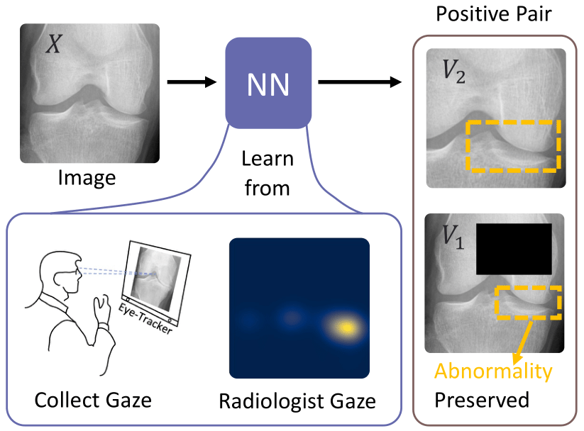

I am currently a Master's student at the School of Biomedical Engineering,
ShanghaiTech University, supervised by Prof. Dinggang Shen. Previously, I
completed my undergraduate studies at Harbin Institute of Technology.
My research primarily focuses on eye-tracking enhanced medical image analysis, as well as exploring the integration of large language models (LLMs) into computer-aided diagnosis (CAD).
During my Master's program, I have dedicated my efforts to aligning CAD models and human perception.
This endeavor encompasses two critical aspects:

|
CLIP in medical imaging: A comprehensive survey
Zihao Zhao*, Yuxiao Liu*, Han Wu*, Yonghao Li, Sheng Wang, Lin
Teng, Disheng Liu, Zhiming Cui, Qian Wang, Dinggang Shen
ArXiv (Under Review), 2023.
[paper] [code]

|

|
Mining Gaze for Contrastive Learning toward Computer-assisted
Diagnosis
Zihao Zhao*, Sheng Wang*, Qian Wang, Dinggang Shen
Proceedings of the AAAI Conference on Artificial Intelligence
(AAAI), 2024.
[paper] [code]

|

|
ChatCAD+: Towards a Universal and Reliable Interactive CAD using
LLMs
Zihao Zhao*, Sheng Wang*, Jinchen Gu*, Yitao Zhu*, Lanzhuju
Mei, Zixu Zhuang, Zhiming Cui, Qian Wang, Dinggang Shen
ArXiv (Under Review), 2023.
[paper] [code]

|

|
ChatCAD: Interactive Computer-Aided Diagnosis on Medical Image
using Large Language Models
Sheng Wang, Zihao Zhao, Xi Ouyang, Qian Wang, Dinggang Shen
ArXiv (Under Review), 2023.
[paper] [code]
|
|

|
Crafting Good Views of Medical Images for Contrastive Learning via
Expert-level Visual Attention
(Oral)
Sheng Wang, Zihao Zhao, Lichi Zhang, Dinggang Shen, Qian
Wang
NeurIPS Workshop Gaze Meets ML, 2023.
[paper] [code]

|

|
MeLo: Low-rank Adaptation is Better than Fine-tuning for Medical
Image Diagnosis (Oral)
Yitao Zhu, Zhenrong Shen, Zihao Zhao, Sheng Wang, Xin Wang,
Xiangyu Zhao, Dinggang Shen, Qian Wang
IEEE International Symposium on Biomedical Imaging
(ISBI), 2024.
[paper] [code]

|
|
|
DoctorGLM: Fine-tuning your Chinese Doctor is not a Herculean
Task
Honglin Xiong*, Sheng Wang*, Yitao Zhu*, Zihao Zhao*, Yuxiao
Liu, Linlin Huang, Qian Wang, Dinggang Shen
ArXiv, 2023.
[project page] [paper] [code]

|